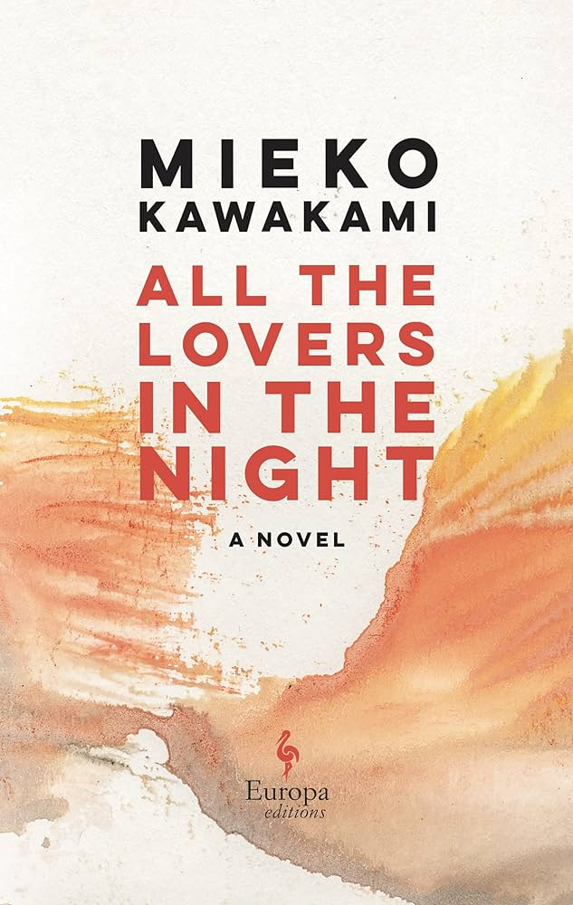

Paper Crane Pages

Melancholy
Much like nostalgia, melancholy in literature evokes a quiet, contemplative sadness—one that often lingers without a clear reason. These stories don’t rely on dramatic tragedy; instead, they unfold gently, allowing emotion to build through silence, distance, and subtle human moments. Readers find themselves deeply connected to the characters, feeling their loneliness, regret, or longing as if it were their own.What makes melancholic books memorable is the way they hold on to a small sense of hope, even when things feel heavy. It’s that bit of light in the sadness that tends to stay with you.
All the Lovers in the Night
Written by Mieko Kawakami
Translated by Sam Bett and David Boyd
Synopsis
Fuyuko Irie is a freelance copy editor in her mid-thirties, living a quiet, solitary life in a city where forming new connections isn’t easy. Aside from the occasional conversation with her outgoing editor, Hijiri, Fuyuko has little interaction with others. One day, catching a glimpse of herself in a shop window, she’s struck by how lifeless and withdrawn she appears and decides it’s time to make a change. But as she starts to open herself up to the world, memories from her past begin to resurface, and her actions grow increasingly unpredictable. All the Lovers in the Night is a sharp and emotionally resonant novel which is funny, heartbreaking, and deeply human. It reminds readers that growth can be painful, but sometimes that pain is what brings us closer to ourselves(Good Reads).
